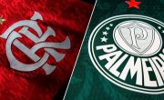

Flamengo e Palmeiras intensificam disputa pela liderança do Brasileirão
A briga pela liderança do Campeonato Brasileiro 2026 segue cada vez mais acirrada. Palmeiras e Flamengo protagonizam uma disputa direta pelo topo da tabela e prometem transformar as próximas rodadas em uma verdadeira corrida pelo título nacional.

O Palmeiras aparece na liderança com 35 pontos após 16 partidas, enquanto o Flamengo ocupa a segunda posição com 31 pontos e ainda possui um jogo a menos, mantendo viva a possibilidade de assumir o primeiro lugar nas próximas rodadas. O Verdão tropeçou recentemente ao empatar com o Cruzeiro, resultado que impediu uma abertura maior na ponta da classificação. Mesmo assim, a equipe mantém regularidade defensiva e segue como uma das campanhas mais sólidas do campeonato. Já o Flamengo continua pressionando de perto. O time rubro-negro apresenta um dos ataques mais eficientes da competição e aposta na força ofensiva e na experiência do elenco para recuperar a liderança. Com o Fluminense também próximo na classificação, a disputa pelo topo promete ganhar ainda mais emoção nas próximas semanas, colocando pressão constante sobre Palmeiras e Flamengo.

Se hoje a tabela mostra Palmeiras e Flamengo brigando ponto a ponto, isso não é novidade pra ninguém que acompanha o futebol brasileiro nos últimos anos. A rivalidade entre os dois ganhou um peso absurdo recentemente, muito por conta do protagonismo das equipes dentro e fora de campo. De um lado, o Palmeiras consolidado como um dos times mais consistentes do país, sempre chegando forte em competições nacionais e internacionais. Do outro, o Flamengo com elencos estrelados e um poder ofensivo que, quando encaixa, vira um verdadeiro pesadelo pra qualquer defesa. Nos últimos anos, os confrontos diretos entre as equipes viraram praticamente “decisão antecipada”. Teve disputa de Copa Libertadores da América, briga por Campeonato Brasileiro e jogos que, mesmo no meio da temporada, tinham clima de final. E não é só dentro de campo que a disputa acontece. Fora dele, a rivalidade também cresceu entre torcidas, redes sociais e aquela clássica guerra de provocações. Cada vitória vira argumento, cada tropeço vira meme — e ninguém quer ficar por baixo. O mais curioso é que os estilos são bem diferentes. O Palmeiras costuma apostar em um jogo mais organizado, estratégico, enquanto o Flamengo, quando está em boa fase, joga com intensidade e agressividade, pressionando do começo ao fim. É o famoso choque de estilos que deixa tudo ainda mais interessante. Por isso, essa atual briga pela liderança não é só mais uma disputa de tabela — é praticamente a continuação de uma rivalidade que vem sendo construída jogo após jogo, temporada após temporada. E se depender do que a gente tem visto até agora… pode preparar a pipoca, porque essa história ainda vai render muitos capítulos. 🍿